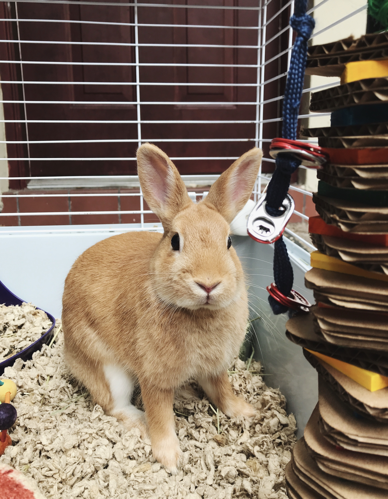

Keeping rabbits in an x-pen doesn’t mean your rabbits won’t need to be out to play for a minimum of 3 to 5 hours a day; and not everyone uses this option: many people simply allow their rabbits free run in the house, or at least the bunny-proofed rooms, all the time. Baby gates are also useful to keep rabbits in one room (or out of a room!).
Inside The Enclosure
1. A litter box big enough for bunny to lie down in, filled with bunny-safe litter- and you as a dutiful friend will clean out the litter box once a day or every other day. Wonderful, large litter
boxes can be purchased inexpensively from Home Depot and like stores. They are called “cement mixers” and are big enough to fill with litter and lots of hay, in which a bunny can munch, dig, and snooze.
2. Food and water containers (heavy
ceramic or attachable bowls), toys – and perhaps a box for bunny to hide in, sit on, and chew upon.

X-pens, also called “puppy exercise pens” or “exercise pens” are a series of eight connected 2-foot wide, wire panels that come in various heights (24″, 30″ and 36″ being the most popular). An x-pen is a great place to leave your bunny when you are gone for the day, or for just a few hours. There is plenty of room for a pair of bunnies to play and move about, plus plenty of room for a litter box, toys and other necessities that make it a home.
